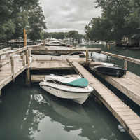

Weather and Tide Chart
Daily Weather Forecast
Tide Chart
Emergency Information
For life threatening emergencies, please dial 911.
Police Department
910-328-4851
910-328-4851
812 S. Anderson Blvd.
Pender EMS
910-328-1136
910-328-1136
801 Flake Ave.
Fire Department
910-328-2980
910-328-2980
814 S. Anderson Blvd.

Bush Marina
912 S. Anderson Blvd
910-328-2746
Bush Marina offers boating access via its boat ramp. Nightly, weekly, or monthly boat slip rentals are also available.
The parking lot is not staffed 24 hours a day. If an attendant is not on duty or you have any qeustions,
please contact Topsail Beach Town Hall (910)328-5481
In addition to boating, the marina offers ice and Town merchandise. Parking is limited to one vehicle per boat.